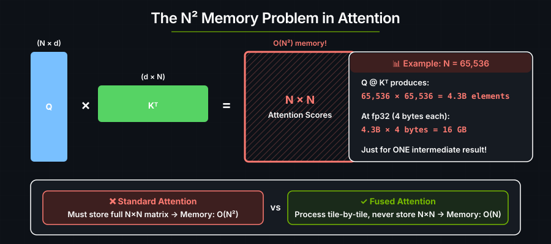
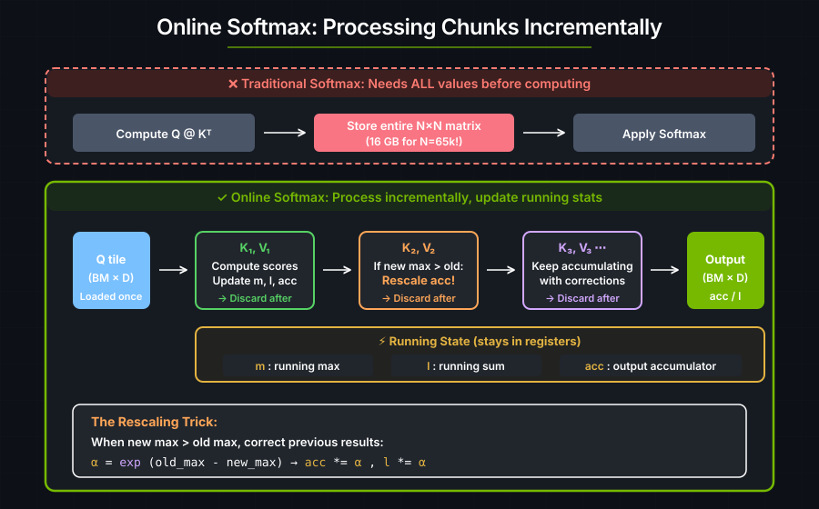
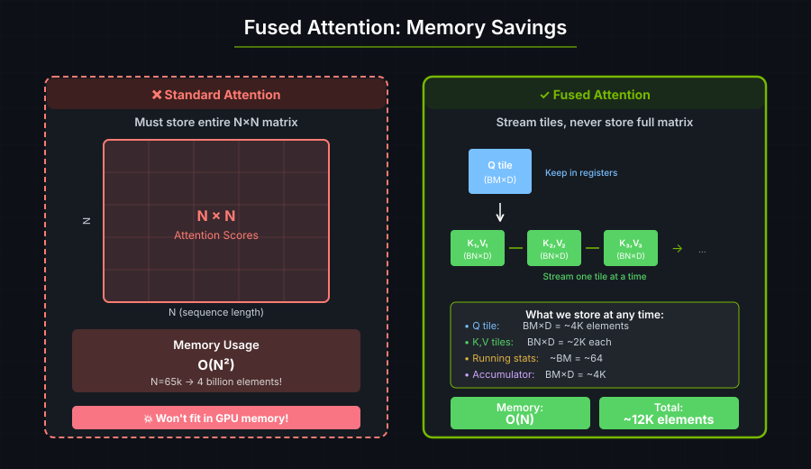

6. Fused Multihead Attention#
Attention computes a weighted combination of values across a sequence. In transformers such as BERT and GPT, the input sequence produces query (Q), key (K), and value (V) tensors:
Attention(Q, K, V) = softmax(Q @ K^T / √d) @ V
Where:
Q (Query): “What am I looking for?”
K (Key): “What do I contain?”
V (Value): “What information do I have?”
d: The embedding dimension of Q and K. This may differ from V.
The softmax produces attention weights — a probability distribution over positions in the sequence.
This fused multihead attention (FMHA) kernel processes Q, K, and V in tiles using online softmax. The compiler handles shared-memory staging, Tensor Core mapping, register allocation, and memory coalescing. Elsewhere in the project, FMHA is also called Flash Attention.
Attention score memory#
The intermediate attention scores matrix is quadratic in the sequence length:
Q shape: (batch, heads, seq_len, head_dim) = (1, 1, N, 64)
K shape: (batch, heads, seq_len, head_dim) = (1, 1, N, 64)
Q @ K^T → shape: (1, 1, N, N)

For N=65k, the scores matrix alone requires 4 billion elements. Long sequences simply do not fit in GPU memory with naive attention.
Row-wise softmax#
Softmax requires access to all values in a row to compute reduce_max and reduce_sum:
let max_x = reduce_max(x, axis);
let exp_x = exp(x - max_x);
let sum_exp = reduce_sum(exp_x, axis);
let result = exp_x / sum_exp;
In standard attention, each row has N elements, so the entire N×N matrix must be stored before computing softmax.
Online Softmax#
Softmax can be computed incrementally by processing one chunk at a time and maintaining running statistics.

When a new chunk introduces a larger maximum, previous results must be corrected:
Before: We computed exp(x₁ - m₁) where m₁ was the old max.
After: We need exp(x₁ - m₂) where m₂ is the new (larger) max.
Correction: exp(x₁ - m₂) = exp(x₁ - m₁) × exp(m₁ - m₂)
^^^^^^^^^^^^ ^^^^^^^^^^^^^
what we had correction factor (α)
The algorithm maintains three running values:
m: Running maximum.l: Running sum of exponentials.acc: Running output accumulator.
When a new maximum appears, all previous results are rescaled by exp(old_max - new_max).
Memory Savings#

At any point the kernel stores:
One Q tile:
BM × Delements (e.g., 64 × 64 = 4,096).One K tile:
BN × Delements (e.g., 32 × 64 = 2,048).One V tile:
BN × Delements (e.g., 32 × 64 = 2,048).Running stats:
BM × 1for max and sum (~64 each).Output accumulator:
BM × Delements (4,096).
Total: ~12,000 elements per tile, regardless of sequence length.
The Algorithm#
For each Q tile (row block of the output):
Initialize: max = -∞, sum = 0, output = 0
For each K,V tile (streaming through the sequence):
1. Compute attention scores: scores = Q_tile @ K_tile^T
2. Scale: scores = scores / √d
3. Update running max: new_max = max(current_max, max(scores))
4. Compute correction factor: α = exp(old_max - new_max)
5. Rescale previous results: output *= α, sum *= α
6. Compute new exponentials: P = exp(scores - new_max)
7. Update sum: sum += sum(P)
8. Accumulate: output += P @ V_tile
9. Update max: current_max = new_max
Normalize: output = output / sum
Implementation note: The code below uses
exp2instead ofexpas a performance optimization —exp2is faster on GPU hardware. To compensate, the scale factor is divided byln(2)so thatexp2(x / ln(2), ftz::Disabled) = exp(x). The correction factorαand softmax numeratorPare both computed withexp2using this adjusted scale.
FMHA kernel#
use cuda_async::device_operation::DeviceOp;
use cuda_core::Device;
use std::sync::Arc;
use cutile;
use cutile::api::{randn, zeros};
use cutile::error::Error;
use cutile::tensor::{IntoPartition, Partition, Tensor, ToHostVec, Unpartition};
use cutile::tile_kernel::{PartitionOp, TileKernel, ToHostVecOp};
#[cutile::module]
mod fmha_module {
use cutile::core::*;
#[cutile::entry(print_ir=false)]
fn fmha<
const BM: i32, // Q tile size (rows of output we compute)
const BN: i32, // K,V tile size (how many K,V we process at once)
const D: i32, // Head dimension
>(
out: &mut Tensor<f32, { [1, BM, D] }>,
q: &Tensor<f32, { [-1, -1, -1, -1] }>, // (B, H, M, D)
k: &Tensor<f32, { [-1, -1, -1, -1] }>, // (B, H, N, D)
v: &Tensor<f32, { [-1, -1, -1, -1] }>, // (B, H, N, D)
qk_scale: f32,
) {
let pid0 = program_id(0);
let h = q.shape()[1];
let batch_idx = pid0 / h;
let head_idx = pid0 % h;
let q_m_idx = program_id(1);
// Convert to exp2-friendly scale (exp2 is faster than exp on GPU)
let two: Tile<f32, { [] }> = constant(2.0f32, shape![]);
let log2: f32 = tile_to_scalar(log(two));
let qk_scale: f32 = qk_scale / log2;
let qk_scale: Tile<f32, { [BM, BN] }> = qk_scale.broadcast(shape![BM, BN]);
// Online softmax state
let mut m_i: Tile<f32, { [BM, 1] }> = constant(f32::NEG_INFINITY, shape![BM, 1]);
let mut l_i: Tile<f32, { [BM, 1] }> = constant(0.0f32, shape![BM, 1]);
let mut acc: Tile<f32, { [BM, D] }> = constant(0.0f32, shape![BM, D]);
// Load Q tile once and reuse for all K,V tiles
let q_part: Partition<f32, { [1, 1, BM, D] }> = q.partition(shape![1, 1, BM, D]);
let tq: Tile<f32, { [1, 1, BM, D] }> = q_part.load([batch_idx, head_idx, q_m_idx, 0i32]);
let tq: Tile<f32, { [BM, D] }> = tq.reshape(shape![BM, D]);
let n: i32 = k.shape()[2];
let num_tiles: i32 = ceil_div(n, BN);
let k_part = k.partition(shape![1, 1, BN, D]);
let v_part = v.partition(shape![1, 1, BN, D]);
// Stream through K,V tiles
for j in 0i32..num_tiles {
// Q @ K^T
let k_tile: Tile<f32, { [BN, D] }> = k_part
.load([batch_idx, head_idx, j, 0i32])
.reshape(shape![BN, D]);
let k_tile_trans: Tile<f32, { [D, BN] }> = k_tile.transpose();
let qk: Tile<f32, { [BM, BN] }> = constant(0.0f32, shape![BM, BN]);
let qk: Tile<f32, { [BM, BN] }> = mma(tq, k_tile_trans, qk);
let qk: Tile<f32, { [BM, BN] }> = qk * qk_scale;
// Update running max
let qk_max: Tile<f32, { [BM] }> = reduce_max(qk, 1);
let qk_max: Tile<f32, { [BM, 1] }> = qk_max.reshape(shape![BM, 1]);
let m_ij: Tile<f32, { [BM, 1] }> = max_tile(m_i, qk_max);
let qk = qk - m_ij.broadcast(shape![BM, BN]);
// Softmax numerator and correction factor
let p: Tile<f32, { [BM, BN] }> = exp2(qk, ftz::Disabled);
let l_ij: Tile<f32, { [BM] }> = reduce_sum(p, 1);
let l_ij: Tile<f32, { [BM, 1] }> = l_ij.reshape(shape![BM, 1]);
let alpha: Tile<f32, { [BM, 1] }> = exp2(m_i - m_ij, ftz::Disabled);
// Update running sum and rescale accumulator
l_i = l_i * alpha + l_ij;
let alpha: Tile<f32, { [BM, D] }> = alpha.broadcast(shape![BM, D]);
acc = acc * alpha;
// Accumulate P @ V
let v_tile: Tile<f32, { [1, 1, BN, D] }> = v_part.load([batch_idx, head_idx, j, 0i32]);
let v_tile: Tile<f32, { [BN, D] }> = v_tile.reshape(shape![BN, D]);
acc = mma(p, v_tile, acc);
m_i = m_ij;
}
// Final normalization
acc = true_div(acc, l_i.broadcast(shape![BM, D]));
let acc = acc.reshape(shape![1, BM, D]);
out.store(acc);
}
}
use fmha_module::fmha;
fn main() -> Result<(), Error> {
let device = Device::new(0)?;
let stream = device.new_stream()?;
let (batch, heads, seq_len, head_dim) = (2, 4, 128, 64);
let (bm, bn) = (64, 32);
let seed = 42u64;
let q: Arc<Tensor<f32>> = randn(0., 1., [batch, heads, seq_len, head_dim], Some(seed))
.sync_on(&stream)?.into();
let k: Arc<Tensor<f32>> = randn(0., 1., [batch, heads, seq_len, head_dim], Some(seed + 1))
.sync_on(&stream)?.into();
let v: Arc<Tensor<f32>> = randn(0., 1., [batch, heads, seq_len, head_dim], Some(seed + 2))
.sync_on(&stream)?.into();
let out = zeros(&[batch * heads, seq_len, head_dim])
.sync_on(&stream)?
.partition([1, bm, head_dim]);
let qk_scale = 1.0 / f32::sqrt(head_dim as f32);
let generics = vec![bm.to_string(), bn.to_string(), head_dim.to_string()];
let (out, _, _, _, _) = fmha(out, q, k, v, qk_scale)
.generics(generics)
.sync_on(&stream)?;
let out_host: Vec<f32> = out.unpartition().to_host_vec().sync_on(&stream)?;
println!("Output length: {}", out_host.len());
Ok(())
}
Output:
Output length: 65536
Key Takeaways#
Concept |
Standard Attention |
Fused Multihead Attention |
|---|---|---|
Memory for scores |
O(N²) — store full matrix |
O(BM × BN) — one tile at a time |
Softmax approach |
Compute all, then normalize |
Online: update as we go |
When max changes |
N/A (have all values) |
Rescale previous results |
K,V access pattern |
Load all at once |
Stream tile by tile |
Low-level optimization |
Manual (shared memory, warps, coalescing) |
Handled by the compiler |
Rescaling adds computation, but avoids storing the full attention matrix. This allows longer sequences to fit in GPU memory.
Reference implementation#
A complete implementation with Multi-Query Attention (MQA) support and reference validation:
cargo run --example flash_attention
out shape = [128, 1024, 64]
diff near zero? true: 5.96e-8
diff near zero? true: 2.98e-8
... (validates against reference for all batch×head combinations)
Exercise 1: Trace the Memory#
Calculate the memory usage for:
Standard attention with N=1024.
Fused multihead attention with N=1024, BM=64, BN=32.
How many times less memory does the fused kernel use?
Exercise 2: Add Causal Masking#
For autoregressive models (like GPT), we only attend to previous positions. Modify the kernel to skip computing attention scores where key_position > query_position.
See also#
Tensors and Tiles —
mma, reductions, and broadcasting combinedUseful Mental Models — why tiled access matters for bandwidth-bound kernels
Performance — Tensor Core utilization and tile-size selection
DSL API — operator reference for the patterns used here